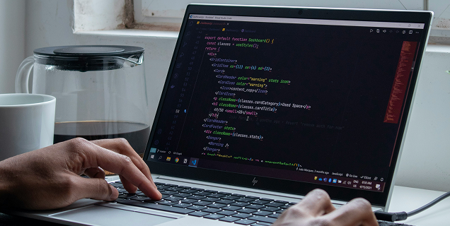

前言
嗨，我是 Alyse，一名前端工程師兼職涯諮詢師。一直以來，我都很喜歡在部落格分享學習與工作心得，也常有讀者問：「我想轉職/自學前端，該從哪裡開始？」 其實自學的過程既自由又具挑戰性。我整理了三大關鍵，幫助你在短期內建立紮實基礎，並快速累積實戰經驗。希望能替你的前端之路帶來一些啟發與動力！
打好基礎：HTML、CSS、JavaScript
HTML 與語意化
為何重要：HTML 是網頁結構的根基，語意化寫法（如 header, main, footer 等）能讓網頁更具可維護性與 SEO 效益。
- 建議做法：
- 學習常見標籤的用途與屬性，如
<section>、<article>、<nav>。 - 善用 MDN、W3Schools 等官方文件，找尋範例程式碼並練習。
CSS 佈局與預處理器
為何重要：好看的網站來自穩定的排版與佈局，掌握 Flexbox、Grid 能讓你隨心所欲打造響應式頁面。
- 建議做法：
- 先掌握基礎 CSS 後，再學習 SASS 或 LESS 這類預處理器，提升樣式開發效率。
- 善用 CSS-Tricks 等資源，了解常見版型技巧。
JavaScript 核心觀念
為何重要：互動效果、資料處理、前端邏輯都仰賴 JavaScript。
- 建議做法：
- 先打穩 ES5 與 ES6 語法基礎，理解閉包 (Closure)、原型鍊 (Prototype) 等核心機制。
- 學會事件監聽、API 資料串接等常見應用，增添網站互動性。
小結：在學習基礎語法時，同步進行小專案實作（如 Todo List、計算機、切版作品集）會讓你進步更快，也能累積展示用作品。

擅用主流框架與工具
React、Vue 先挑一個
- React：生態系豐富、社群支援強，適合喜歡客製化的工程師。
- Vue：上手容易、檔案結構直覺，適合對「漸進式開發」有興趣的開發者。
TIP：可以先看官方文件或跟著基礎教學做出小專案，感受哪個框架更順手。
版本控制、協作與建置
- Git 與 GitHub：一定要掌握分支、Pull Request、Code Review 等流程，並熟悉 Git Flow 或 Trunk Based Development。
- 打包工具：了解 Webpack、Vite、Parcel 等常見工具的基本原理與設定，對於優化與部署大有幫助。
自動化測試與最佳實踐
- 測試框架：Jest、Mocha、Cypress 等，建立單元測試與 E2E 測試思維。
- 程式結構與品質：遵循程式風格 (Lint)、維持命名規範、模組化思考，確保專案可維護。
持續練習與參與社群
多參加前端挑戰 / Hackathon
- 在實作中快速累積經驗，也能認識更多同好。
- 像是 Frontend Mentor 提供多種真實設計稿，可練習切版與互動。
打造個人作品集網站
- 部署在 GitHub Pages 或其他免費/付費主機。
- 整合自己做過的小專案，並用文字介紹技術棧與實作細節。
社群互動、分享心得
- 參與線上或線下的技術交流、讀書會、Meetup，與同行討論，能啟發更多想法。
- 有餘力可將學習過程寫成部落格文章或筆記，進一步強化自己的理解。
結語
自學前端可能遇到卡關、挫折，但同時也具備很高的自主性。只要把 基礎、框架、實踐 三大面向做好，就能在前端這條路上穩步前進。若你在學習過程中需要更多建議或想要職涯諮詢，歡迎透過聯絡方式與我聯繫！
「程式替你開路，諮詢替你指路，一起走向更寬廣的未來。」
延伸閱讀
- 前端面試不再慌：破解常見提問的三大策略
- 掌握前端測試：從單元測試到端對端測試的完整攻略
- SEO 與前端最佳實踐：讓搜尋引擎看見你的網站